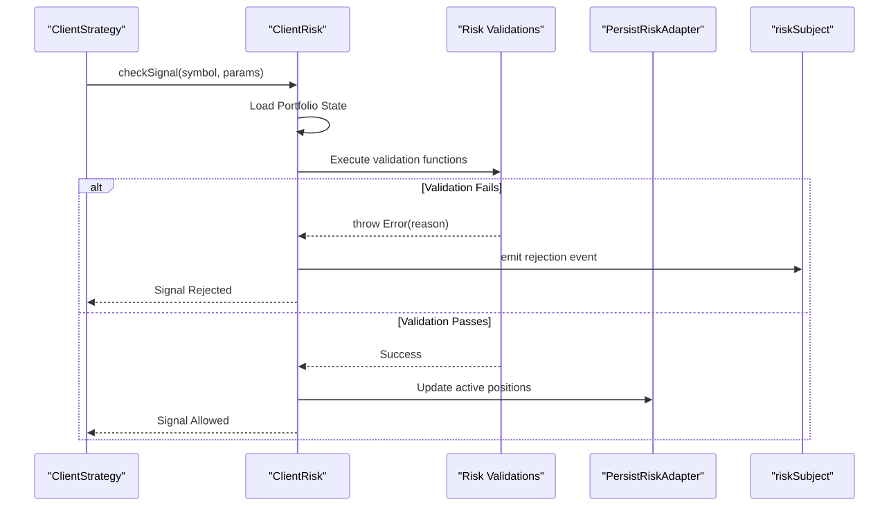

The risk management system in backtest-kit provides portfolio-level validation and position tracking to prevent excessive risk exposure. Unlike individual signal validation, which checks internal parameters, risk management analyzes the state of the entire portfolio across all active strategies before a signal is permitted to execute.
Risk management operates as a gatekeeper between the strategy's request for a signal and the actual creation of that signal. It ensures that any new position adheres to global constraints defined in a risk profile.
getSignal() to generate a new trading signal.ClientRisk.checkSignal() evaluates the signal against registered risk rules.IRiskValidationPayload containing the current portfolio state.PersistRiskAdapter to ensure crash safety.The following diagram illustrates how the ClientRisk entity coordinates between strategies and validation logic.
Risk Logic Sequence

Risk profiles are registered using the addRisk() function. Strategies link to these profiles by matching the riskName identifier.
import { addRisk } from "backtest-kit";
addRisk({
riskName: "conservative", // Unique identifier
note: "Conservative profile", // Optional documentation
validations: [ // Array of validation rules
// Validation logic here
],
callbacks: { // Optional event hooks
onRejected: (symbol, params) => { /* ... */ },
onAllowed: (symbol, params) => { /* ... */ },
},
});
| Field | Type | Description |
|---|---|---|
riskName |
string |
Unique profile identifier used by strategies |
note |
string? |
Optional documentation for the profile |
validations |
Array |
Array of functions or objects containing validation logic |
callbacks |
object? |
Event callbacks for onRejected and onAllowed |
Every validation function receives an IRiskValidationPayload object. This provides the "World View" necessary for portfolio-level decision making.
| Field | Type | Description |
|---|---|---|
symbol |
string |
The trading pair being requested |
pendingSignal |
ISignalDto |
The signal data awaiting validation |
strategyName |
string |
The strategy requesting the signal |
activePositionCount |
number |
Total active positions across all strategies |
activePositions |
Array |
List of IRiskActivePosition objects currently open |
timestamp |
number |
Current system/backtest timestamp in ms |
The system supports diverse validation logic, ranging from simple count limits to complex temporal and multi-strategy checks.
Limits the total number of open positions to manage capital exposure.
({ activePositionCount }) => {
if (activePositionCount >= 3) {
throw new Error("Maximum 3 concurrent positions reached");
}
}
Prevents trading on specific instruments (e.g., blacklisting high-volatility assets).
({ symbol }) => {
const restricted = ["DOGEUSDT", "PEPEUSDT"];
if (restricted.includes(symbol)) {
throw new Error(`Symbol ${symbol} is restricted`);
}
}
Restricts activity to specific hours or days (e.g., avoiding weekend gaps or illiquid hours).
({ timestamp }) => {
const hour = new Date(timestamp).getUTCHours();
if (hour < 9 || hour >= 17) {
throw new Error("Outside of business hours (9:00-17:00 UTC)");
}
}
Ensures strategies do not "fight" over the same symbol or exceed per-strategy quotas.
({ activePositions, strategyName, symbol }) => {
// Check if this symbol is already being traded by ANY strategy
const duplicate = activePositions.find(p => p.signal.symbol === symbol);
if (duplicate) {
throw new Error(`${symbol} already has a position via ${duplicate.strategyName}`);
}
}
riskSubject)When a signal is rejected by the risk layer, an event is emitted to the riskSubject. This allows UI components or monitoring logs to display the specific reason for the trade failure without the strategy needing to handle the error internally.
Entity Mapping: Code to Logic
